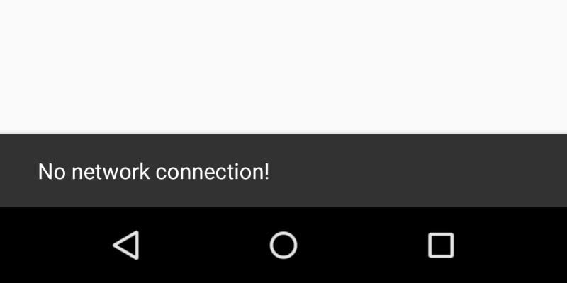
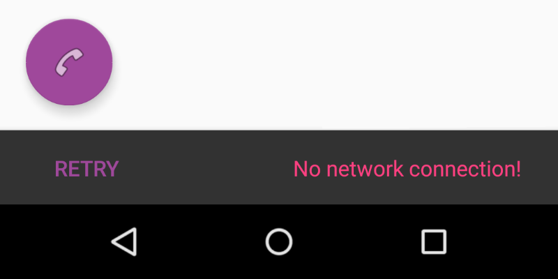
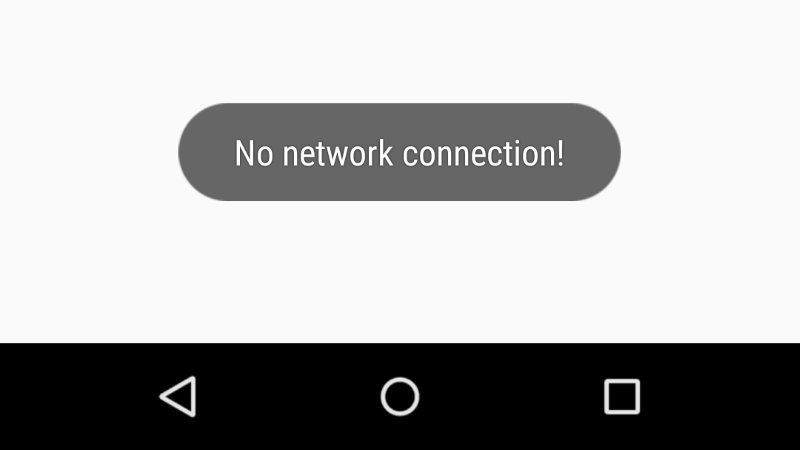
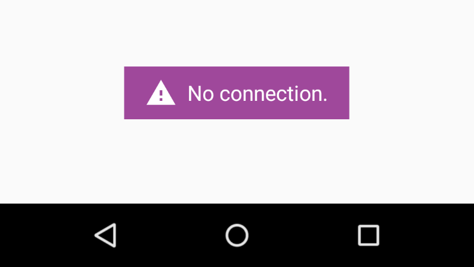

Snackbars & Toasts¶
Snack Bar¶

摘自 google material design 文档.
Snackbars 通过在屏幕底部显示一个简短的信息，提供了关于一个操作的轻量反馈。
如何添加?¶
I. 在你的 build.grade 文件末尾添加最新的 design 库。
dependencies { // optionally, Snackbar can be used in pair // with CoordinatorLayout // compile 'com.android.support:appcompat-v7:X.X.X' compile 'com.android.support:design:X.X.X' // where X.X.X version }
II. 用 make() 方法创建一个 Snackbar 实例，然后调用 show() 方法。
Snackbar .make(view, "No network connection.",Snackbar.LENGTH_SHORT) .show();
参数 view 被用来查找父视图。Snackbar 将被显示在它的上面。
Snackbar 将尝试并找到一个父视图去控制 Snackbar's 视图。Snackbar 将沿着视图树去尝试找到一个合适的父视图，它被定义为一个
CoordinatorLayout或者窗口的 decor's 内容视图，以先找到的为准。
Duration¶
指定 Snackbar 在屏幕上显示多长时间使用 setDuration 方法。
// 预定义的持续时间常量 Snackbar.LENGTH_SHORT // 1500 millis Snackbar.LENGTH_LONG // 2750 millis Snackbar.LENGTH_INDEFINITE // 你可设置自己定义的持续时间 snackbar.setDuration(TimeUnit.MINUTES.toMillis(1));
Dismiss¶
使用 dismiss() 方法可以在任何时候 dismiss 掉 Snackbar 。
Snackbar snackBar = Snackbar.make(view, text, duration); snackBar.dismiss(); //hide snackbar
Events¶
每当 Snackbar 被显示或者隐藏的时候可以使用 setCallback 方法来追踪。
Snackbar .make(...) .setCallback(new Snackbar.Callback() { @Override public void onDismissed(Snackbar snackbar, int event) { // do some action on dismiss } @Override public void onShown(Snackbar snackbar) { // do some action when snackbar is showed } })
参数 event 来自于 onDismissed()，是 Snackbar.Callback 内预定义的常量之一。
Actions¶

Snackbar 可以包含一个 action 。通过调用 setAction() 方法添加它。
Snackbar .make(...) .setAction("Retry", new View.OnClickListener() { @Override public void onClick(View v) { // retry to send email here } })
要开启滑动 dismiss 和自动的移动像 FloatingActionButton 这样的组件需要使用 CoordinatorLayout 作为根布局。
<android.support.design.widget.CoordinatorLayout xmlns:android="http://schemas.android.com/apk/res/android" xmlns:tools="http://schemas.android.com/tools" android:layout_width="match_parent" android:layout_height="match_parent"> <android.support.design.widget.FloatingActionButton android:layout_width="wrap_content" android:layout_height="wrap_content" android:layout_gravity="end|bottom" android:src="@android:drawable/ic_menu_call"/> </android.support.design.widget.CoordinatorLayout>
如何设置样式?¶

通过主题¶
I. 在你的 values/styles.xml 文件内定义自定义样式。
<style name="SnackbarTheme" parent="Theme.AppCompat.Light"> <item name="colorAccent">@color/indigo</item> <item name="android:textColor">@color/pink</item> </style>
II. 在 AndroidManifest.xml 中通过android:theme 属性应用这个样式到你的 Activity。
<activity android:name=".SnackbarActivity" android:theme="@style/AppTheme"> </activity>
备注: 应用主题到
Activity将会应用colorAccent和android:textColor到它内部的所有 view。
通过代码¶
使用 getView() 方法获取 Snackbar 视图并改变它的属性。
// 创建实例 Snackbar snackbar = Snackbar.make(view, text, duration); // 设置动作按钮颜色 snackbar.setActionTextColor(getResources().getColor(R.color.indigo)); // 获取 snackbar 视图 View snackbarView = snackbar.getView(); // 改变 snackbar 文本颜色 int snackbarTextId = android.support.design.R.id.snackbar_text; TextView textView = (TextView)snackbarView.findViewById(snackbarTextId); textView.setTextColor(getResources().getColor(R.color.indigo)); // 改变 snackbar 背景 snackbarView.setBackgroundColor(Color.MAGENTA);
通过自定义 view¶

I. 在你的 values/layout 文件夹里添加一个自定义布局。
<?xml version="1.0" encoding="utf-8"?> <LinearLayout xmlns:android="http://schemas.android.com/apk/res/android" android:orientation="horizontal" android:layout_width="match_parent" android:layout_height="wrap_content"> <Button android:id="@+id/snackbar_action" android:layout_width="wrap_content" android:layout_height="wrap_content" android:layout_marginLeft="@dimen/design_snackbar_extra_spacing_horizontal" android:layout_marginStart="@dimen/design_snackbar_extra_spacing_horizontal" android:layout_gravity="center_vertical|right|end" android:paddingTop="@dimen/design_snackbar_padding_vertical" android:paddingBottom="@dimen/design_snackbar_padding_vertical" android:paddingLeft="@dimen/design_snackbar_padding_horizontal" android:paddingRight="@dimen/design_snackbar_padding_horizontal" android:visibility="gone" android:textColor="?attr/colorAccent" style="?attr/borderlessButtonStyle"/> <TextView android:gravity="center_vertical|right" android:id="@+id/snackbar_text" android:layout_width="wrap_content" android:layout_height="wrap_content" android:layout_weight="1" android:paddingTop="@dimen/design_snackbar_padding_vertical" android:paddingBottom="@dimen/design_snackbar_padding_vertical" android:paddingLeft="@dimen/design_snackbar_padding_horizontal" android:paddingRight="@dimen/design_snackbar_padding_horizontal" android:textAppearance="@style/TextAppearance.Design.Snackbar.Message" android:maxLines="@integer/design_snackbar_text_max_lines" android:layout_gravity="center_vertical|left|start" android:ellipsize="end"/> </LinearLayout>
备注
Use `@dimen/design_snackbar` values to match material design guidelines. Use `?attr/colorAccent` to apply your Application Theme changes to `Snackbar`.
II. 继承自 BaseTransientBottomBar 类.
public class CustomSnackbar extends BaseTransientBottomBar<CustomSnackbar> { /** * Constructor for the transient bottom bar. * * @param parent The parent for this transient bottom bar. * @param content The content view for this transient bottom bar. * @param contentViewCallback The content view callback for this transient bottom bar. */ private CustomSnackbar(ViewGroup parent, View content, ContentViewCallback contentViewCallback) { super(parent, content, contentViewCallback); } }
III. 添加 BaseTransientBottomBar.ContentViewCallback
public class CustomSnackbar ... { ... private static class ContentViewCallback implements BaseTransientBottomBar.ContentViewCallback { // view inflated from custom layout private View content; public ContentViewCallback(View content) { this.content = content; } @Override public void animateContentIn(int delay, int duration) { // add custom *in animations for your views // e.g. original snackbar uses alpha animation, from 0 to 1 ViewCompat.setScaleY(content, 0f); ViewCompat.animate(content) .scaleY(1f).setDuration(duration) .setStartDelay(delay); } @Override public void animateContentOut(int delay, int duration) { // add custom *out animations for your views // e.g. original snackbar uses alpha animation, from 1 to 0 ViewCompat.setScaleY(content, 1f); ViewCompat.animate(content) .scaleY(0f) .setDuration(duration) .setStartDelay(delay); } } }
IV. 通过自定义布局和方法来创建 Snackbar
public class final CustomSnackbar ...{ ... public static CustomSnackbar make(ViewGroup parent, @Duration int duration) { // inflate custom layout LayoutInflater inflater = LayoutInflater.from(parent.getContext()); View content = inflater.inflate(R.layout.snackbar_view, parent, false); // create snackbar with custom view ContentViewCallback callback= new ContentViewCallback(content); CustomSnackbar customSnackbar = new CustomSnackbar(parent, content, callback); // set snackbar duration customSnackbar.setDuration(duration); return customSnackbar; } // set text in custom layout public CustomSnackbar setText(CharSequence text) { TextView textView = (TextView) getView().findViewById(R.id.snackbar_text); textView.setText(text); return this; } // set action in custom layout public CustomSnackbar setAction(CharSequence text, final OnClickListener listener) { Button actionView = (Button) getView().findViewById(R.id.snackbar_action); actionView.setText(text); actionView.setVisibility(View.VISIBLE); actionView.setOnClickListener(new View.OnClickListener() { @Override public void onClick(View view) { listener.onClick(view); // Now dismiss the Snackbar dismiss(); } }); return this; } }
V. 创建 CustomSnackbar 实例对象并调用 show() 方法。
CustomSnackbar customSnackbar = CustomSnackbar.make(rooView, CustomSnackbar.LENGTH_INDEFINITE); customSnackbar.setText("No network connection!"); customSnackbar.setAction("Retry", new View.OnClickListener() { @Override public void onClick(View v) { // handle click here } }); customSnackbar.show();
翻译水平有限，欢迎批评指正
原文作者：Yakiv Mospan 原文地址：Snackbar
Toast¶

摘自 google material design 文档.
Android 另外提供了一个 toast，主要用于系统消息。Toasts 跟 snackers 类似，但是不能包含 actions 和 不能懂屏幕滑动关闭掉。
如何添加?¶
用 make() 方法创建一个 Toast 实例，然后调用 show() 方法。
Toast.makeText(context, "No network connection.", duration).show();
Duration¶
使用 makeText() 方法的 duration 参数 或者 setDuration 方法指定 Snackbar 在屏幕上显示多长时间。
// you can use only those 2 predefined constants duration = Toast.LENGTH_SHORT; // 2000 millis duration = Toast.LENGTH_LONG; // 3500 millis toast.setDuration(duration);
Cancel¶
可以在任何时候使用 cancel() 方法手动的去隐藏 Toast 。
Toast toast= Toast.make(view, text, duration).show(); toast.cancel(); //hide toast
如果在它显示的时候关闭它或者在不想显示的时候它仍然显示，通常你不需要去调用这个方法。它会在持续适当的时间之后自己消失。
Positioning¶
用 setGravity() 可以改变 Toast 的显示位置。
int gravity = Gravity.CENTER; // the position of toast int xOffset = 0; // horizontal offset from current gravity int yOffset = 0; // vertical offset from current gravity Toast toast= Toast.make(view, text, duration); toast.setGravity(gravity, xOffset, yOffset);
如何设置样式?¶

用代码¶
// 创建 Toast 实例 Toast toast = Toast.makeText(context, text, duration); // 设置消息颜色 TextView textView= (TextView) toast.getView().findViewById(android.R.id.message); textView.setTextColor(Color.YELLOW); // 设置背景颜色 toast.getView().setBackgroundColor(getResources().getColor(R.color.indigo));
用自定义 View¶
I. 在 layout.xml 文件内的任意位置声明你的自定义 View。
<?xml version="1.0" encoding="utf-8"?> <TextView xmlns:android="http://schemas.android.com/apk/res/android" android:id="@+id/txtMessage" android:layout_width="wrap_content" android:layout_height="wrap_content" android:drawableStart="@drawable/ic_report_problem" android:drawablePadding="8dp" android:paddingTop="8dp" android:paddingBottom="8dp" android:paddingLeft="16dp" android:paddingRight="16dp" android:gravity="center" android:textColor="@android:color/white" android:textSize="16dp" android:text="No connection." android:background="@color/indigo"/>
II. 通过 setView() 方法设置你的自定义 View 到 Toast 。
// 创建 Toast 实例 Toast toast = new Toast(getApplicationContext()); // 创建自定义 view View view = getLayoutInflater().inflate(R.layout.toast_view, null); // 设置自定义 view toast.setView(view); // 设置显示持续时间 toast.setDuration(Toast.LENGTH_LONG); // 设置位置 int margin = getResources().getDimensionPixelSize(R.dimen.toast_vertical_margin); toast.setGravity(Gravity.BOTTOM | Gravity.CENTER_VERTICAL, 0, margin); // 显示 Toast toast.show();
翻译水平有限，欢迎批评指正
原文作者：Yakiv Mospan 原文地址：Toast